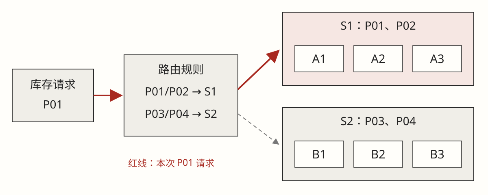

同一故障范围
A1、A2 同机房断电，A3 尚在：只剩一份，缺少多数
分片定位数据，协议决定提交，快照确定报表版本
 VER. 2608
Built with impress.js
VER. 2608
Built with impress.js
说明 P01 的请求位置、提交条件和查询可见时间
P01 位于 S1；副本协议与读策略决定本次可用副本

分片划分数据；节点可承载多个分片的副本，图中为便于读图分开放置
独立操作：P01 初始 16，P03 初始 8；两者各买一件
| 请求 | 参与范围 | 执行结果要求 |
|---|---|---|
| 只查 P01 库存 | S1 副本组 | 按读策略返回一个库存值 |
| 统计所有零件库存 | S1 与 S2 | 按约定的一致视图合并结果 |
| 同时扣 P01 与 P03 | S1、S2 及订单参与者 | 一起得到 15、7，或一起撤销 |
同一订单可跨多个分片；分片设计须结合事务访问范围
每 100 个写请求：P01 有 90 个，P02 有 5 个，P03/P04 合计 5 个
| 放置方法 | 各处请求数 | 写入压力 |
|---|---|---|
| 原规则：P01/P02 在 S1 | S1=95，S2=5 | S1 明显更忙 |
| 单独把 P01 放进 S3 | S1=5，S2=5，S3=90 | 90 个请求集中到 S3 |
| 只增加 P01 的副本 | 仍然更新同一个键 | 同键更新存在写冲突 |
迁移可平衡不同键的负载；单键热点取决于写入频率、冲突与更新方式
简化迁移例：P02 从 S1 迁到 S3，路由版本从 v7 变为 v8
迁移协议协调数据追赶、写入交接、路由更新与故障恢复
本例为固定三成员、非恶意故障、正确多数派协议；不推演完整协议
| 可互通成员 | 人数条件 | 提交约束 |
|---|---|---|
| A1、A2、A3 | 3≥2 | 有效领导者与日志条件 |
| A1 停机，A2/A3 互通 | 2≥2 | 完成必要选主与日志衔接 |
| A1/A2 停机，只剩 A3 | 1<2 | 不能确认新的多数派提交 |
| A1 隔离，A2/A3 互通 | A2/A3：2≥2 | A1 不能单独确认提交 |
多数成员互通是必要条件；新提交还须满足选主与日志要求
同一机房断电可同时损失多个副本，网络隔离会阻断多数派通信
A1、A2 同机房断电，A3 尚在：只剩一份，缺少多数
A1 与多数隔离，无法确认新提交
S1 正常但 S2 无法提交，跨 S1/S2 订单仍可能等待或失败
正确协议保护已提交状态；落后节点须补齐才能按规则服务
超时可能由回复丢失引起；客户端须核查事务结果或幂等重试，避免重复扣减
不同硬件改善不同环节，具体收益随负载与系统设计变化
| 硬件 | 具体帮助 | 配套设计 |
|---|---|---|
| 更多 CPU 核 | 并行扫描多个分片 | 同一库存键上的冲突 |
| 更大内存 | 缓存更多数据与索引 | 断电恢复、内存带宽 |
| 非易失性介质 NVM | 某些介质支持持久存储 | 持久化顺序和故障一致性 |
| 高速网络与 RDMA | 降低部分远端数据传输开销 | 网络故障与远端并发访问 |
RDMA 提供远程直接内存访问；事务语义与数据持久化由相应协议保证
托管是责任安排，存算解耦是架构方式，两者可以同时存在
| 事项 | 一种安排 | 配套工作 |
|---|---|---|
| 实例与备份维护 | 使用托管数据库服务 | 用户负责设计与授权 |
| 计算与存储分别扩容 | 采用支持独立扩容的架构 | 按瓶颈选择扩容对象 |
| 云资源池使用 | 按负载申请与释放资源 | 按负载设计资源组织 |
存算解耦是一种云原生设计思路，托管服务也可采用
数据量与核数用于说明扩容选择，不代表实测吞吐或价格
| 观察 | 候选动作 | 效果核对 |
|---|---|---|
| 500 GB，CPU 满载 | 计算从 8 核增至 16 核 | 检查锁冲突与 I/O 瓶颈 |
| 数据增长到 2 TB | 增加存储容量与带宽 | 核对索引、备份与带宽 |
| CPU 空闲，远端读拥堵 | 检查存储与网络路径 | 检查远端读取耗时变化 |
计算扩容可复用存储数据；缓存加载、远程访问与调度可能增加成本
独立例：提交按顺序编号，分析水位表示已完整应用到该序号
| 时刻 | 事务源 | 分析副本 |
|---|---|---|
| 10:03:00 | O100 以序号 501 提交 | 完整水位仍为 500 |
| 10:03:02 | 501 已提交 | 水位 500，新查询尚不含 O100 |
| 10:03:04 | 501 已提交 | 水位 501，新查询可含 O100 |
本例延迟 4 秒，满足假设的 5 秒可查询目标；教学时间线不代表产品实测
假设分析查询采用一致快照，在 10:03:02 选定水位 500
| 事件 | 查询所用版本 |
|---|---|
| 10:03:02 启动 | 快照不含序号 501 的订单 |
| 10:03:04 副本追到 501 | 原查询保持快照 500 |
| 10:03:08 查询完成 | 结果仍标注所用数据版本 |
| 重新发起查询 | 可按策略选择包含 501 的新快照 |
副本水位表示同步进度，查询快照确定本次读取的数据版本
行存与分析副本可以分开，但仍可能共享网络、CPU 或存储
记录短事务响应时间及其峰值，关注长时间等待
记录查询完成时间和所用数据水位
检查扫描是否挤占写入和日志带宽
限并发、分配资源或排队，核对两类请求的响应目标
HTAP 兼顾事务与分析，具体负载下须测量同步延迟与相互干扰
14.1 的三条销售记录汇总为月销量 5 与 4，供模型使用
| 环节 | 输入或动作 | 核对内容 |
|---|---|---|
| 数据准备 | 筛选、连接、统一日期与单位 | 两条月销量记录 |
| 数据治理 | 保存来源、版本、访问权限 | 能追查每个数来自哪些行 |
| 执行优化 | 选择计划及 CPU/GPU | 核对运行时间与搬运成本 |
| 模型环节 | 使用数据训练或预测 | 预测准确性须另行评估 |
DB4AI 用数据库支持 AI 的数据处理；预测准确性由模型评估检验
AI4DB 用 AI 辅助行数估计、参数配置与异常检测
| 任务 | 具体例子 | 效果核对 |
|---|---|---|
| 估计查询行数 | 均匀假设估 50，实际返回 7000 | 学习估计是否更接近、计划是否改善 |
| 建议参数 | 根据历史负载建议内存配额 | 新负载效果及回退方法 |
| 异常检测 | 标记异常访问模式 | 检验误报漏报和权限 |
估计从 50 改为 6000，行数误差减小；执行速度须用实际运行时间检验
同一零件业务可以有多种访问要求；第 15 章逐项展开
| 模型 | 明确请求 | 结果形态 |
|---|---|---|
| 键值 | 按键 part:P01 查名称 | 一个键对应的值 |
| 文档 | 取 P01 的额定电压 | 值 220 与单位 V |
| 图 | 找 P01 的两跳供应关系 | 节点与关系路径 |
| 时序 | 按一分钟统计设备温度 | 时间窗口与聚合值 |
| 关系 | 连接库存和零件名称 | 关系查询结果行 |
统一接口须明确语义、权限和事务范围；跨模型原子提交需要相应支持
路由定位分片，协议决定提交，快照确定查询版本
P01 在 S1，P03 在 S2
三副本至少两份可互通，并满足选主、日志与路由条件
序号 501 在 4 秒后可用于新快照；旧查询继续使用水位 500
测量热点、同步、远程读取、资源争用与恢复开销
第 15.1 节用键值与文档接口实现具体数据访问